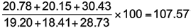

Plusieurs articles
Un indice des prix globaux combine les prix de plusieurs articles connexes dans un numéro d'index unique. Le groupe d'articles est parfois appelé un panier ou un panier pour faire court.
Il ya de nombreux exemples d'indices agrégés – les agrégats NZX50 indice des prix des 50 premières entreprises (telle que mesurée par la capitalisation boursière) cotées à la Bourse de New Zealand Stock, l'indice des prix trimestriels des consommateurs (ou IPC) agrège les prix d'une gamme de produits alimentaires et autres achats des ménages et est couramment utilisé comme une mesure de l'inflation des prix dans l'économie néo-zélandais.
Non pondérée indice global des prix
Il existe deux types d'indices de prix globale. Le plus simple type est connu comme un indice global des prix non pondéré et est ainsi appelé parce qu'il donne un poids égal à chaque élément dans le panier. Si il ya des éléments dans le panier n puis l'indice global des prix non pondéré dans le temps i est donnée par
où Pi(j) et P0(j) désigne le prix de l'élément j-ème dans le panier au moment i et à la fois de base respectivement.
Ceci est juste un indice de prix simple appliqué à la somme (ou moyenne) des prix item.
Les prix du poisson en Nouvelle-Zélande
Le tableau ci-dessous montre le prix moyen des trois types de poissons en Nouvelle-Zélande de 2005 à 2009 (Source: site Web Statistics NZ).
| Prix moyen de détail de poissons ($/kg) | |||||
|---|---|---|---|---|---|
| 2005 | 2006 | 2007 | 2008 | 2009 | |
| Tarakihi | 19.20 | 20.78 | 22.77 | 25.43 | 26.67 |
| Gurnard | 18.41 | 20.15 | 21.93 | 24.32 | 26.42 |
| Snapper | 28.73 | 30.43 | 33.67 | 35.16 | 37.40 |
En utilisant 2005 comme année de référence un indice agrégé pour le prix du poisson peut être construit comme suit. Le nombre 2006 est donnée par l'indice

et les indices globaux pour les années restantes peuvent être calculés de manière similaire. Les indices sont présentés dans le tableau ci-dessous.
| 2005 | 2006 | 2007 | 2008 | 2009 | |
|---|---|---|---|---|---|
| Indice des prix non pondérée | 100 | 107.57 | 118.13 | 127.99 | 136.40 |
Les valeurs de l'indice sont interprétés de la même manière que les indices de prix simple. Par exemple, il peut être vu que les prix du poisson ont été près de 28% plus élevés en 2008 qu'ils ne l'étaient en 2005.